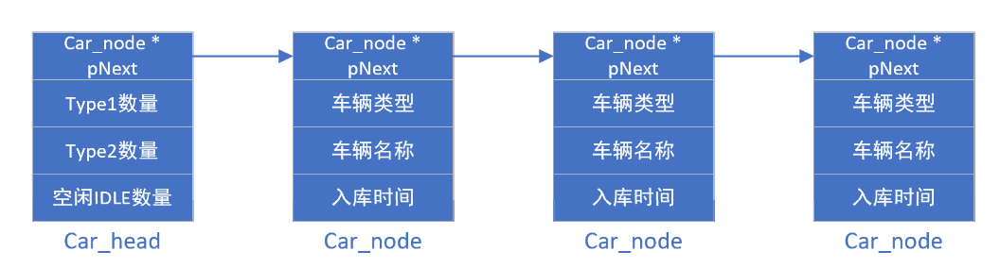

单向链表
使用场景
链表在内存空间中的存储是随机的，通过指针单（双向）连接，相较于内存空间连续的数组，优点在于链表长度不固定（可以add或del），缺点在于不能够像数组一样通过下标的方式查找到节点，而是需要遍历链表。
裸机程序中用于在C语言中管理相同的对象，比如停车场车辆管理程序中，通过链表节点的增删改查记录车辆的信息。  车辆管理程序案例
RTOS中的链表是关键部分，无论是线程执行链表，还是将所有的进程间通信（ipc）以及其他对象（object）链接在一起进行管理。
代码示例
语言：C
编译器：Keil5
/*停车场管理系统的链表使用案例*/
//全局变量 global value
struct node{
struct node *pNext;
char car_type[5];
char car_name[5];
int year;
int month;
int day;
int hour;
int min;
int sec;
unsigned long total_sec;
};
struct head{
struct node *pNext;
int C_Count;
int V_Count;
int I_Count;
};
/*
* 功能：在链表中插入节点
* 参数：phead-链表头节点，pnode-等待插入的节点
*/
void LIST_ADD_NODE(struct head *phead, struct node *pnode)
{
struct node *list = phead->pNext;
if(list)
{
while(list->pNext)
{
list = list->pNext;
}
list->pNext = pnode;
}
else
{
phead->pNext = pnode;
}
//可以忽略，对头节点结构体的变量进行处理
if(pnode->car_type[0] == 'C')
{
phead->C_Count ++;
phead->I_Count --;
}
else if(pnode->car_type[0] == 'V')
{
phead->V_Count ++;
phead->I_Count --;
}
}
/*
* 功能：在链表中删除节点
* 参数：phead-链表头节点，number-需要被删除节点结构体中的一* 个变量值，可以是一个唯一的值，比如序号。
*/
void LIST_DEL_NODE(struct head *phead, char *number)
{
struct node *list = phead->pNext;
struct node *pnode;
//如果头节点没有下一个node
if(!list) return;
if(strcmp(list->car_name, number))
{
//只要链表的当前节点还有下一个节点，并且下一节点的车牌号与目标车牌号不相同
while((list->pNext) && strcmp(list->pNext->car_name, number))
{
list = list->pNext;
}
if(list->pNext != NULL)
{
pnode = list->pNext;
list->pNext = list->pNext->pNext;
}
else
{
//您在试图删除一个不存在的节点
return;
}
}
else
{
pnode = phead->pNext;
phead->pNext = phead->pNext->pNext;
}
if(pnode->car_type[0] == 'C')
{
phead->C_Count --;
phead->I_Count ++;
}
else if(pnode->car_type[0] == 'V')
{
phead->V_Count --;
phead->I_Count ++;
}
}
/*
* 功能：遍历结构体，根据名称字符串对应节点结构体找到节点
* 参数：phead-链表头节点，name-链表中某一节点的名称
*/
struct node* LIST_FIND_NODE_BY_NAME(struct head *phead, char *name)
{
struct node* p = phead->pNext;
while(p)
{
if(strcmp(p->car_name,name) == 0)
return p;
else
p = p->pNext;
}
return NULL;
}
void main()
{
...
//创建链表
car_list = (struct head *)malloc(sizeof(struct head));
car_list->I_Count = IDLE_Count;
car_list->C_Count = CNBR_Count;
car_list->V_Count = VNBR_Count;
...
}
注意事项
如果将新malloc的指针变量存储到链表中后不要free掉这个这个指针变量，因为这个指针变量代表的是一块内存空间的起始地址，这块内存空间中是有数据的。否则下一次malloc很有可能会再次malloc到这个地方，但是此处是有数据的，就会导致覆盖。